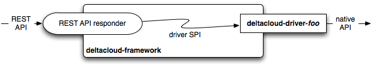

Writing Deltacloud Drivers
The Deltacloud Core framework is provided to assist in creating intermediary drivers that speak the Deltacloud REST API on the front while communicating with cloud providers using their own native APIs on the back.

The framework handles all aspects of the REST API, while allowing driver implementors to focus on the specific cloud provider native API.
Drivers may be implemented in as little as one Ruby class and plugged into the Deltacloud Core for deployment.
Driver SPI
Credentials
The framework will collect credentials when the driver indicates they
are required by throwing a DeltaCloud::AuthException. Each driver
method takes a credentials hash as the first parameter, but unless the
client has provided credentials, this hash will be empty.
def images(credentials, opts)
if ( credentials[:name].nil? )
throw DeltaCloud::AuthException.new
end
unless ( credentials_valid?( credentials ) )
throw DeltaCloud::AuthException.new
end
# do work
end
Object models used by drivers
To assist driver authors, the framework provides a handful of model
classes, representing each resource available through the Deltacloud
API. Please see the API reference for details about each
model. All of these model objects may be initialized with a hash.
Every instance must be assigned an id in addition to other
attributes it may have. Unless otherwise noted, attributes are text.
For example
HardwareProfile.new(
:architecture=>'x86_64',
:memory=>4,
:storage=>650,
)
The base_driver interface and the already implemented drivers are
located at server/lib/deltacloud/ in the Deltacloud Core repository.
HardwareProfile
Attributes are
idarchitecturememory- Decimal, gigabytesstorage- Decimal, gigabytescpu- Interger, count
Realm
Attributes are
idnamestatelimit
Image
Attributes are
idnamearchitectureowner_iddescription
Instance
Attributes are
idnameowner_id- Opaque, external referenceimage- References an imagerealm- References a realmstate- One ofPENDING,RUNNING,SHUTTING_DOWN,STOPPEDactions- Array of applicable actionspublic_addresses- Array of IP addresses or hostnames as textprivate_addresses- Array of IP addresses or hostnames as text
Driver methods
The primary methods a driver class must implement are
hardware_profiles(credentials, opts=nil)images(credentials, opts=nil )realms(credentials, opts=nil)instances(credentials, opts=nil)create_instance(credentials, image_id, opts)reboot_instance(credentials, id)stop_instance(credentials, id)destroy_instance(credentials, id)
Generally, the BaseDriver handles singular cases while the specific
provider driver must implement only the plural cases, along with
specific action methods against resources.
Additionally, to assist clients in determining what actions may be available without making additional requests, the following must be implemented.
While the credentials hash is passed as the first parameter to each
method, it may be empty until the driver throws at least one
DeltaCloud::AuthException. This exception will indicate to the
framework that a normal HTTP authentication challenge should be issued
to the client. Depending on the underlying provider the driver is
connecting to, the credentials may not be required for some methods.
Some methods also allow an optional opts hash, which may be nil or
empty if not used for a particular invocation. The BaseDriver
provides a method filter_on(...) which may be used to safely filter
collections. The filter_on(..) method will be demonstrated below.
Each method will be described in more detail below.
hardware_profiles(credentials, opts=nil)
The hardware_profiles(...) method should return an array of
HardwareProfile objects. The opts hash, if present, must be
inspected for :id and :architecture keys. If these keys are
present, the results should be filtered by the value associated with
each key. The filter_on(...) method is useful in this case.
For example
def hardware_profiles(credentials, opts=nil)
hardware_profiles = fetch_all_hardware_profiles()
hardware_profiles = filter_on( hardware_profiles, :id, opts )
hardware_profiles = filter_on( hardware_profiles, :architecture, opts )
return hardware_profiles
end
realms(credentials, opts=nil)
The realms(...) method should return an array of Realm objects.
images(credentials, opts=nil)
The images(...) method should return an array of Image objects
visible and accessible to the current user, as defined by the
credentials hash.
The opts hash, if present, must be inspected for :id, :owner_id
and :architecture keys. If these keys are present, the results
should be filtered by the value assocaited with each key.
instances(credentials, opts=nil)
The instances(...) method should return an array of Instance
objects visible and accessible to the current user, as defined bv the
credentials hash. If the opts hash is present and contains an
:id key, the results should be filtered by the value associated with
the key.
create_instance(credentials, image_id, opts)
The create_instance(...) method should create within the cloud, a
new running instance based from an image identifier. The method should
return an Instance object representing the newly-created instance.
The image_id parameter must be non-nil. The opts hash may contain
keys for hwp_id and realm_id. If they are present, they should be
used for the creation of the instance. If they are not present,
reasonable defaults should be used. In the case of hardware profile,
one compatible with the image should be used as the default.
reboot_instance(credentials, id)
The reboot_instance(...) method should trigger a running instance to
be rebooted. This method has no return value.
stop_instance(credentials, id)
The stop_instance(...) method should trigger a running instance to
be stopped. This method has no return value. A cloud provider may
allow restarting an instance, or may not.
destroy_instance(credentials, id)
The destroy_instance(...) method should remove the instance from the
cloud provider, stopping it first, if necessary.
instance_states()
The instance_states() method should return an array/hash structure
representing the finite-state-machine for instances. Each state an
instance may be in should be an element in the returned array. Each
state itself is also an array with 2 members. The first member is the
name of the state, and the second member is a hash indicating valid
transitions.
The general format for the entire FSM structure is
[
[ :origin_state1, {
:destination_state1=>:action1,
:destination_state2=>:action2,
} ],
[ :origin_state2, {
:destination_state3=>:action3,
:destination_state4=>:action4,
} ],
]
Valid states are
:begin:pending:running:shutting_down:stopped:end
The :begin state is the state an instance is in immediate before
being created. The :end state is the state an instance is in
immediately after being destroyed.
Valid transition actions are
:stop:start:reboot
Additionally, to indicate a transition that may occur without an
action being triggered, the action **:_auto_ may be used.